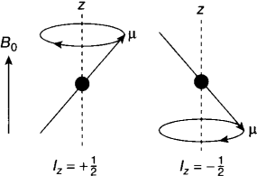

Precession
In the absenence of a external magnetic field, all the nuclear moments of the same isotope have the same energy. When an external magnetic field B0 is turned on along a direction designated as the z axis, the energies of the nuclei are affected. There is a slight tendency form magnetic moments to align in the direction of B0 over the opposite direction −z.
As we've seen the direction and magnitude of the magnetic moment are quantized, thus there are 2I+1 allowed projections onto the chosen axis, z and the nuclear mmoments are not actually lined up parallel to z, but form an angle with it. For example, a spin one-half nuclei would have two possible values of Iz: 1/2ℏ and −1/2ℏ. By convention, nuclei with m =+1/2 are aligned with the applied field and are in the lower energy state and those with m =−1/2 are antiparallel.
The effect of applying any external field B0 to the spins is to generate a torque, τ, on the nuclear magnetic moments. This torque will cause a change in angular momentum as described by the following classical equation:
τ = dI/dt = μ x B
using μ = γ I we can write
dμ/dt = γμ x B
Because the torque is always perpendicular to both B0 and μ (according to the definition of a cross product), the magnetic moments will move in a circular fashion about the z axis, a motion called precession.
Energy
In the absence of B0, all orientations of the nuclear magnets in space have the same energy. When the field B0 is turned on it interacts with the nuclear magnets to alter their energies. Because energy is a scalar quantity is obtained by the scalar (or dot product) of the magnetic moment and the external magnetic field, i.e.
E = μ ⋅ B
To relate the energy of a nuclear spin to its quantum state, we make use of the relationship between the magnetic dipole and the z-component of the spin angular momentum, μz = γm
E = γℏmB0
For a I = 1/2 spin nucleus, m = ±1/2, thus two states result, whose energies are given respectively by
E1 = −1/2γℏB0 E2 = 1/2γℏB0
This splitting into multiple states has been called the Zeeman effect.
The difference in energy between the two spin states is given by
ΔE = E2 − E1 = hν0 = γℏB0
Where we used Plank relation (ΔE = hν0); and using the relationship, E = ℏω, gives the Larmor equation:
ω0 = −γ B0
ω0 is an angular velocity, in units of radians per second and the ν0 the frequency, in units of cycles per second or hertz. They are called the Larmor frequency. We see that this frequency is proportional to the magnetic field strength, as we expect, with the constant of proportionality being the gyromagnetic ratio. The negative sign of the Larmor frequency for spins of positive γ indicates that the spin angular momenta precess around the magnetic field in a clockwise direction.
The precession rate of the nucleus in a magnetic field corresponds to the resonant frequency, ω0.
The actual magnetic field that is present at the nucleus is usually attenuated, or shielded, by the presence of electrons that surround the nucleus, giving a modified field at the nucleus, B:
Beff = (1 − σ) B0
Where σ is a “shielding constant” in units of parts per million, which reflects the extent to which the electron cloud around the nucleus “shields” it from the external magnetic field.
Thus the quantities ω0 and ν0 refer to the absorption, or resonance frequency, of the shielded nucleus, i.e. its observed resonance frequency.
Populations
The energy of an NMR transition is quite low, requiring radiowaves to excite the spins. The small value of ∆E has two important consequences:
The population difference between the two energy levels is very small, on the order of 1 part in 106. The actual population difference can be easily calculated from Boltzmann’s relationship:
As discussed in the introduction to NMR, a long lifetime provides three benefits. The lifetime of the excited state can be quite long, on the order of msec to sec. : narrow resonance lines, experimental manipulation of the excited state in multi-dimensional experiments, and sensitivity to molecular motion over a wide time scale.
N2 / N1 = exp(−γℏB0/kT) ≈ 1 − γℏB0/kT
Where the exponential function has been simplified by approximation:
e−x ∼ 1 − x, if x << 1
In any form of spectroscopy the presence of electromagnetic radiation induces transitions from the ground to the excited state and vice versa. Consequently, the net absorption depends on the population difference between the two states. The small population difference makes NMR spectroscopy a relatively insensitive experimental technique (due to the small excess of spins in the ground state that can be excited).
Notice the dependence of T on the population difference; Thermal motion is very much greater than the energy of interaction between a nuclear magnetic moment and the applied field, and so the thermal motion easily disrupts the alignment of the magnetic moments. However, there is a small preference for alignment with the field and this, when averaged over the sample, gives rise to a bulk magnetization of the sample, parallel to the field direction.
Due to the low sensitivity, it is common to increasethe signal-to-noise of the spectrum by signal averaging. In addition, typical NMR experiments require protein concentrations on the order of 1 mM. However, in some cases concentrations in the range of 50 μM have be used.